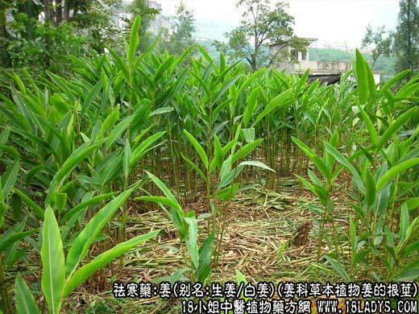
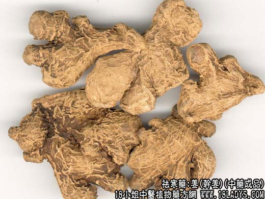
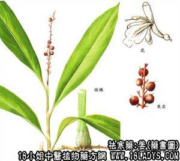

本品为常用中药《神农本草经》列为中品，原名干姜，现商品分为鲜姜和干姜两种。
1、鲜姜
别名：生姜。
产地：除东北外，全国大部地区均产。
性状鉴别：根茎呈扁平的不规则块状，并有指状分歧，各分歧顶端有茎痕或芽，表面黄白色或灰白色，具光泽，有浅棕色环节。折断后有汁渗出。气芳香，味辛辣。以块大，丰满、质老者为佳。
炮制：用时切片。捣汁称鲜姜汁，煨用称煨姜。
性味：辛、微温。
归经：入肺、脾、胃经。
功能：解表散寒、止呕、除痰、解毒。
2、干姜
别名：白姜、均姜。
产地：主产于四川犍为，贵州长顺、兴仁，此外浙江、陕西、江西、湖北、广东、广西、福建等地均有生产，均为栽培。
性状鉴别：形态同鲜姜，但表皮皱缩，顶端均有下凹的茎痕，表面灰白色或灰黄色，有细皱纹或粗糙，也有明显的环节，易折断。断面灰白色或黄白色，有细小油点。质坚的多粉质，有少数纤维；质松的纤维多，粉质少，气味同鲜姜。以质坚体重，断面白色，粉质足，味香浓而辣者为佳。
主要成分：同生姜，含挥发油及姜辣素等。
功效与作用：1、促进血液循环，服后胃肠有温暖感，即所谓“温中散寒”；2、健胃止呕；3、反射性兴奋血管运动中枢，通过交感神经兴奋，使血压上升。辛辣剌激确能使健康人的血压升高。
炮制：切片或切块。片生用；块炒炭用。
性味：辛温。
归经：入肺、脾、胃经。
功能： 祛寒温中，回阳。
主治：吐泻腹痛，肢冷脉微，寒饮咳嗽，胃脘冷痛，寒湿痹痛等症。
临床应用：1、用于治疗中焦虚寒（即脾胃虚寒）。凡有恶心、呕吐或呃逆、口泛清涎，或腹痛、腹泻，舌淡苔白、脉迟缓者（多见于慢性胃炎、慢性结肠炎、消化不良），可配党参、白术，方如理中汤。
2、用于温化痰饮。凡寒咳多痰，呼吸短促（如慢性支气管炎等），多用干姜，并配细辛、五味子等，更可加桂枝，方如温肺化饮汤和苓桂五味姜辛汤，或在理中汤基础上，再加陈皮、茯苓、半夏。
3、用于温经止血，治崩漏、吐血、便血而证属虚寒者。在妇科尤为多用。治妇女虚寒崩漏，子宫出血（病程较长，血出瘀黑成块，脉象沉迟者适用），常配附子和其它补气止血药，方如姜附固冲汤。又可用于经后期血色黑而有小腹痛（由血气虚寒所致），方如姜附四物汤（干姜、附子、川芎、当归、白芍、熟地）。
4、用于回阳救逆，治疗亡阳症。辅助附子，加强祛寒作用，方如四逆汤。
使用注意：1、孕妇慎用。阴虚内热咽喉疼痛，或多汗者，均不宜用干姜。
2、干姜与生姜比较：干姜善于温中而祛里寒，生姜长于发汗而散外寒。
3、干姜与附子比较：干姜温中散寒，主要作用于肠胃（但亦能促进全身血循环），其效力较强劲而持久，附子大热回阳，强心作用较显著，作用于全身，其力较迅速而不久留。故前人的经验说：附子走而不守，干姜能走能守。（按：“走”即作用部位广泛的意思，“守”即作用部位较局限但较持久）。干姜、附子配合能加强回阳救逆、温中散寒止痛的作用。相得益彰，故前人说：“干姜无附子不热”，而附子得干姜其毒性亦稍减。
4、干姜对胃有刺激性，故入补剂时常须配甘草、大枣以缓合其刺激性。
5、淡干姜是由原药泡淡后切片晒干而成，气味没有那么峻热，散寒力稍弱些，但长于止呕、行气。
用量：3～9g，稍大量可用至12～15g。
处方举例：1、理中汤（《伤寒论》）：党参12g，干姜9g，白术12g，炙甘草6g，水煎服。
2、苓桂五味姜辛汤：茯苓15g，桂枝4.5g，五味子9g，干姜3g，细辛1.5g，水煎服。
3、姜附固冲汤：干姜6g，熟附片6g，白术12g，黄芪12g，山萸肉15g，生龙骨12g，生牡蛎12g，茜草9g，陈棕炭9g，水煎服。
注：1、药用干姜以四川犍为主要产区，产量大，质量优。但因姜种和栽培地区不同，好次亦有差异。例如龙华场产的体瘦皮粗多筋，色带黄；建版场的产品块大肥实，皮细，粉质足，内色白。其它各省虽亦有产，但多体瘦纤维多，粉质少，辛辣味较淡，质次。
2、植物学上说姜的原植物仅有一种，实际也有变种，与菊花情况相似（如毫菊、杭菊、滁菊等）。
3、姜是用根茎繁殖的，作种的根茎叫做“种姜”。四川有“黄口”（芽尖齐呈樱桃嘴）“铁白口”（芽尖略弯）和“白口”之分，药用以黄口最好，铁白口次之，白口最次。黄口姜的优点：块大而结实，粉性大，味辣，水分较少，炕制干姜成品率高。它与一般食用鲜姜不同。食用鲜姜的老姜干燥后，体形瘪瘦，纤维多，无粉性。
附：姜皮，来源：与姜同，是将鲜姜浸于水中过夜，用刀剥取外皮晒干而成，多为加工糖姜片的副产品。效用：味辛性晾，功能和中行水，主治皮肤水肿。